Tema 4. Uso básico de los componentes de Windows
Cuando nosotros trabajamos con una computadora, ésta se convierte de alguna forma en: un aula de clases o en una oficina. Para poder trabajar dentro de esa aula u oficina necesitamos tener un lugar que nos permita trabajar, y guardar la información que se maneja. En Windows, ese lugar se llama: Escritorio (Desktop).
El Escritorio (Desktop) es la primera pantalla que aparece una vez que se haya cargado el Sistema Operativo, después de que se inició la sesión. El escritorio está formado por varios componentes fundamentales, que permiten la función de todas las aplicaciones o programas que tiene la computadora, y de alguna forma nos permite adecuarlo para sentir un agradable ambiente de trabajo, por ejemplo podemos poner fotos o notas como si en realidad fuera un escritorio dentro de una oficina.
Componentes de Windows

- Del lado izquierdo siempre encontrará el acceso a los programas.
- Del lado derecho superior, está el acceso a las carpetas y archivos más utilizados.
- Del lado derecho inferior está el acceso al panel de control y propiedades del sistema.
- Del lado derecho encontrará en Windows 7 y del lado izquierdo en Windows 10 los botones para apagar la computadora o suspender una sesión.
Un icono es una representación gráfica de un elemento del sistema operativo. En ambos sistemas son muy similares, sólo cambian unos pequeños aspectos de diseño.
| Hay íconos para: | Windows 7 |
| Documentos | 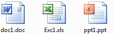 |
| Carpetas | 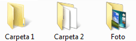 |
| Bote de basura | 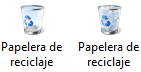 |
| Programas o aplicaciones | 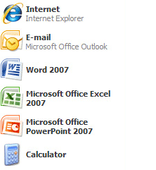 |
Es la barra horizontal que aparece en la parte inferior de la pantalla. Se divide en cuatro secciones principales, en las cuales se pueden ver:
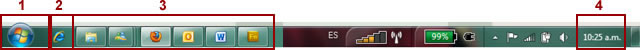- El botón Inicio (Start) , que abre el menú Inicio.
- La barra de herramientas de inicio rápido, que le permite iniciar programas con un solo clic.
- La sección intermedia, que muestra los programas y documentos que tiene abiertos y permite cambiar rápidamente entre ellos.
- El área de notificación, que incluye un reloj e iconos (imágenes pequeñas) que indican el estado de determinados programas y la configuración del equipo.
Es una barra vertical larga situada a un lado del escritorio. Está disponible en las versiones Windows Vista y Windows 7. Contiene miniprogramas denominados gadgets o herramientas que ofrecen información de forma inmediata y proporcionan un acceso fácil a las herramientas de uso frecuente.
Por ejemplo, puede utilizar gadgets para mostrar una presentación de imágenes, ver titulares de periódicos, o tener el reloj en formato tradicional, entre otras cosas.
Los componentes del escritorio de Windows (Desktop), van ligados a un elemento muy importante para su funcionamiento: la ventana de trabajo, ya que todas las aplicaciones o programas que trabajan bajo Windows, sin importar la versión, necesitan de un escenario para visualizarse.
Windows es una palabra en inglés que en español significa ventanas, toda la información que nos presenta el software de Windows está organizada en forma de cuadros o rectángulos que se parecen a ventanas.
Una ventana es una parte de la pantalla sobre la que se ejecutará un programa o se realizarán una serie de tareas. Todas las ventanas poseen una serie de elementos comunes, veamos cuáles son.
|
Botón de Minimizar:
Haciendo clic sobre este botón la ventana se reduce y se coloca en la barra de tareas, en la parte inferior de la pantalla. |
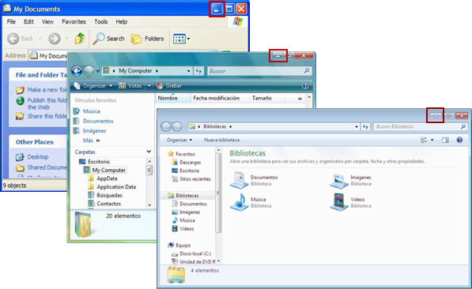 |
|
Botón de Maximizar:
Este botón permite aumentar el tamaño de la ventana hasta ocupar la totalidad de la pantalla. |
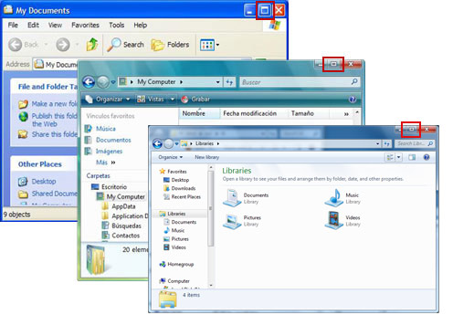 |
|
Botón de Restaurar:
Una vez maximizada la ventana, el botón de maximizar cambia al de restaurar , presionando este botón, la ventana vuelve al tamaño que poseía antes de maximizarse. |
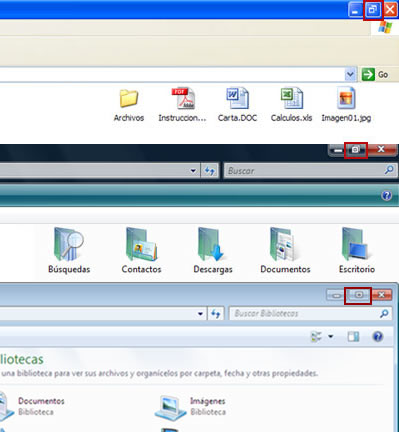 |
|
Botón de Cerrar:
Cierra una ventana y la aplicación que está abierta. |
|
|
Íconos:
Incluye los iconos de archivos, programas, carpetas y otros elementos. |
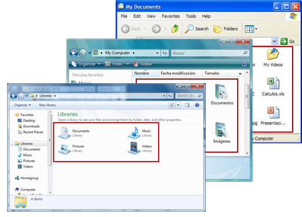 |
|
Barra de Título:
Muestra el nombre de la ventana, puede ser el archivo, carpeta o programa. |
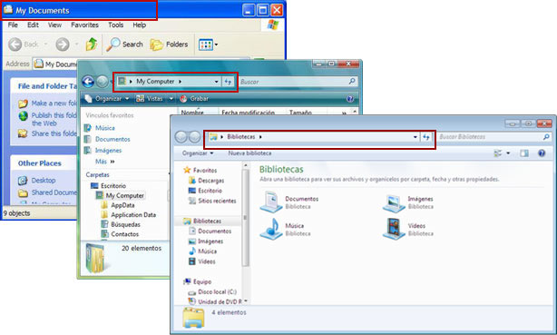 |
|
Barra de Menú:
Debajo de la barra de títulos se encuentra la Barra de Menú, que contiene los menús Archivo (File), Edición (Edit) o Ayuda (Help). Haciendo clic en cualquiera de estos menús se despliega otro submenú en forma de persiana, es decir, se despliega una lista de comandos. Para escoger uno, basta con desplegar el cursor del ratón (mouse) sobre el comando correspondiente y hacer clic. |
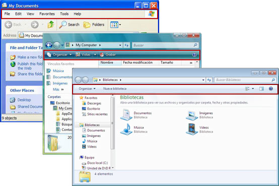 |
|
Barra de Desplazamiento:
Permite moverse a lo largo y ancho de un documento de forma rápida y sencilla, simplemente hay que desplazar la barra arrastrándola con el ratón, o hacer clic en las flechas. Hay barras para desplazarse de forma horizontal y vertical. |
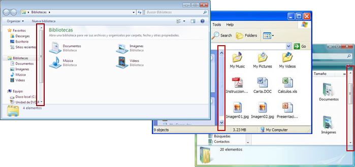 |
|
Bordes y esquinas:
Puede arrastrar estos elementos con el puntero del ratón (mouse) para cambiar el tamaño de la ventana. Cuando visualice en la esquina derecha inferior unos puntos, sólo haga clic y arrastre el ratón, hasta tener el tamaño deseado de la ventana. |
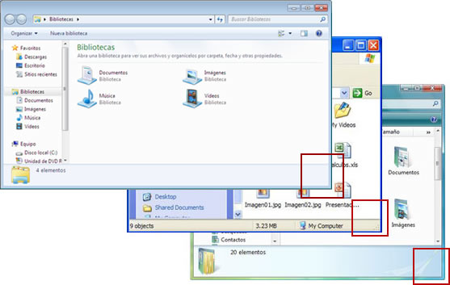 |
Las cajas de diálogo son ventanas que el sistema operativo utiliza para realizar preguntas o dar mensajes, y tienen la estructura básica de las ventanas de aplicaciones o carpetas.
En la mayoría de las cajas de diálogo se encontrará con más de un botón en la parte inferior de la pantalla y como se puede observar, despliegan diferentes opciones, que pueden ser elegidas con el apuntador del ratón directamente.
Ejemplo: cuando usted desea eliminar un archivo, el sistema operativo pregunta si estamos seguros de querer borrar esa información. Es ahí cuando aparecen las cajas de diálogo. En todas las versiones de Windows son muy similares, sólo cambian algunos aspectos de diseño.
Hay cajas de diálogo que tienen más opciones dentro, por ejemplo cuando entramos a las Propiedades de Pantalla.
La forma de visualizar las opciones de cada pestaña o categoría es haciendo clic en el nombre de la pestaña; de esa forma vemos la información de cada pestaña, y cambiará según nosotros cambiemos de pestaña, haciendo clic en el subtítulo.
Esta caja de diálogo tiene varias fichas o pestañas en la parte superior como son: Temas (Themes - ficha que se encuentra resaltada), Fondo (Desktop), Protector de pantalla (Screen Saver), Apariencia (Appearance) y Configuración (Settings). Para moverse dentro de ellas, sólo hace clic en las diferentes pestañas.
Los iconos de acceso directo son la forma más rápida y fácil de acceder a los programas, carpetas o archivos que se utilizan con más frecuencia.
Se pueden colocar accesos directos en un lugar que vea frecuentemente, como el escritorio o una carpeta.
¿Quiere aprender cómo hacer un acceso directo?
Una forma fácil de hacerlo es la siguiente:
- Seleccione el archivo, carpeta o programa del cual desea tener un acceso directo.
- Haga clic derecho sobre el archivo, carpeta o programa y arrástrelo al lugar donde desea tener el acceso rápido.
- Se desplegará el menú contextual, con pocas opciones. Elija la opción "Crear acceso directo" (Create shortcuts Here). 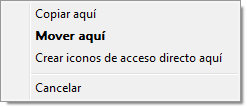
- Automáticamente el acceso habrá sido creado en el sitio donde se situó el archivo, carpeta o programa.
La información que se ha eliminado se coloca en un lugar de almacenamiento temporal llamado "Papelera de Reciclaje" que permite recuperar carpetas, archivos o cualquier otro elemento que haya sido borrado con intención o eliminado accidentalmente.

La papelera de reciclaje funciona como si fuera un bote (o recipiente) de basura, en donde se coloca lo que ya no se necesita y que se puede recuperar siempre y cuando no se haya vaciado el bote.
¿Cómo recuperar información de la papelera de reciclaje?
- Haga doble clic izquierdo en el Icono de Papelera de reciclaje (Recycle bin).
- Automáticamente se abrirá una ventana que contiene la información de los archivos o carpetas eliminadas, permitiendo la opción de reubicar esta información en el directorio correspondiente.
- Para recuperar archivos o carpetas, selecciónelos y escoja alguna de las dos opciones:
- Despliegue el menú contextual haciendo clic izquierdo sobre el archivo; seleccione Restaurar (Restore); ahora usted podrá acceder a su archivo en el lugar donde lo tenía almacenado.
- Arrastre el archivo al lugar donde desea guardarlo nuevamente; puede ser el escritorio para que lo ubique rápidamente.